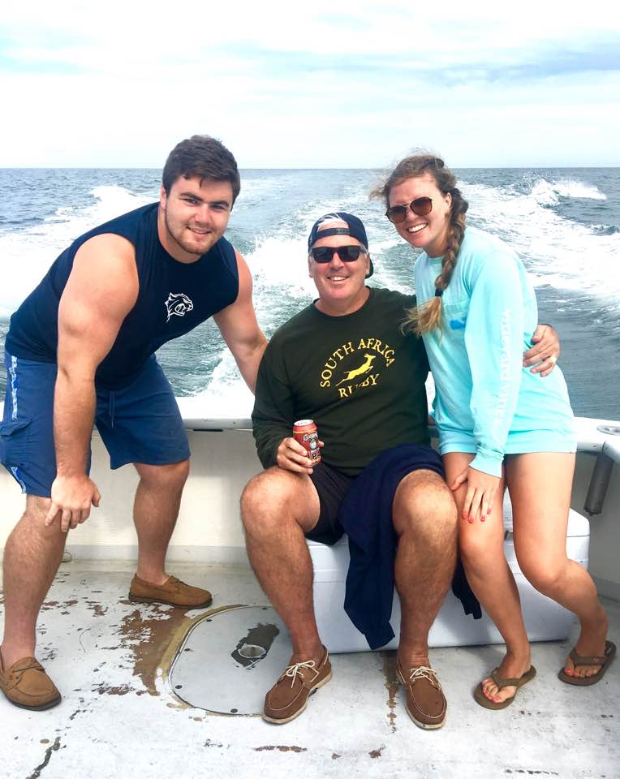

"Family is not an important thing, it is everything" -Micheal J. Fox

Members of my Family:
John:
John is my dad who was born and raised in Northern Virginia. He went to Brown University and played soccer there. He is now an attorney and the father of 3 kids.
Grace:
Grace is my mom who was born in Germany and raised in Virginia Beach. She went to Randolph-Macon College in Virginia and played field hockey there. She was a lawyer for 20 years and is now a judge.
Jack:
Jack is my older brother who, like me and my Dad, was born and raised in Northern Virginia. He currently attends the University of New Hampshire and plays football there. He is a Business Finance major.
Burke:
Burke is my younger brother who was also born and raised in Northern Virginia. He is currently a freshman in high school and attends Gonzaga College High School in Washington, DC. Burke plays a lot of sports including basketball, football, rugby, and swimming.